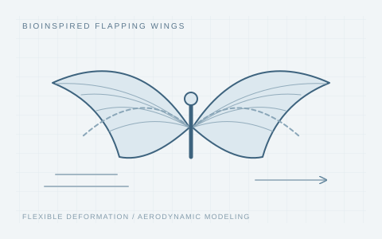

An improved quasi-steady model capable of calculating flexible deformation for bird-sized flapping wings
Nonlinear Dynamics, 2025

Concept illustration / 研究示意
Aerodynamic modeling of flexible flapping wings, supported by CFD, wind-tunnel experiments, and indoor and outdoor flight tests.